Odată ce începeți să utilizați Outlook în mod regulat, poate fi dificil să țineți pasul cu toate mesajele dvs. Din fericire, există mai multe funcții care vă pot ajuta să vă gestionați și să vă organizați mesajele.
În această lecție, veți învăța cum să creați dosare, să aplicați categorii și să stabiliți reguli. Vom vorbi, de asemenea, despre utilizarea semnalizatoarelor pentru a vă gestiona mesajele și despre ștergerea mesajelor din căsuța de e-mail.
Folosind foldereDosarele vă pot ajuta să vă mențineți mesajele organizate. Există patru foldere implicite în vizualizarea Mail: Inbox, Ciorne, Articole trimise și Articole șterse. La fel ca folderele de pe computer, folderele din Outlook pot fi imbricate pentru a crea mai multe straturi de organizare. De exemplu, puteți crea mai multe dosare în dosarul Inbox pentru a urmări diferitele tipuri de mesaje pe care le primiți.
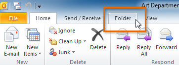
Înainte de a crea un folder nou, trebuie să selectați locația dorită pentru acel folder. În exemplul nostru, vom crea un folder în dosarul Inbox pentru a ajuta la organizarea mesajelor care conțin note importante.
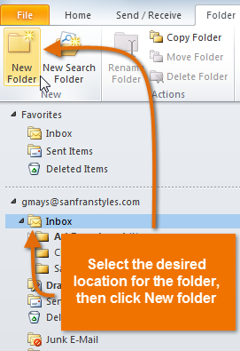
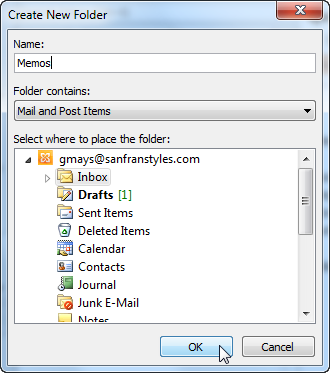
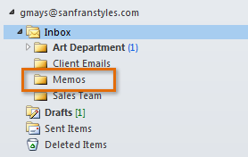
Categoriile pot facilita găsirea și organizarea mesajelor dvs. Aplicarea unei categorii se aseamănă cu mutarea unui mesaj într-un dosar, dar cu o diferență importantă: puteți aplica mai multe categorii oricărui mesaj. De exemplu, dacă ați primit un mesaj despre o viitoare întâlnire de vânzări , puteți aplica ambele categorii Vânzări și Întâlniri. Categoriile sunt concepute să funcționeze în orice mod doriți — este ușor să redenumiți categoriile, să alegeți noi culori pentru categorii și chiar să creați categorii noi.
Pentru a personaliza categoriile:Outlook 2010 oferă șase categorii implicite , care sunt denumite în funcție de culorile lor. Poate doriți să personalizați numele categoriilor înainte de a începe să le utilizați pentru a vă organiza mesajele.
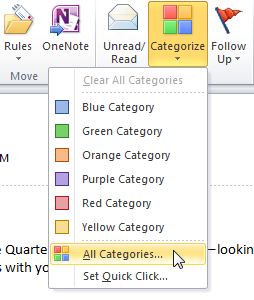
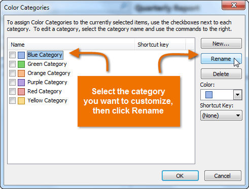
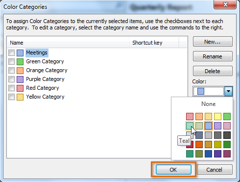
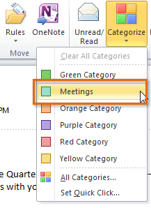
După ce ați aplicat categorii pentru unele dintre mesajele dvs., puteți vizualiza cu ușurință toate mesajele din orice categorie dată folosind un filtru. De exemplu, este posibil să doriți să vizualizați mesajele din categoria Întâlniri, astfel încât să puteți vedea tot ce se referă la o întâlnire viitoare.
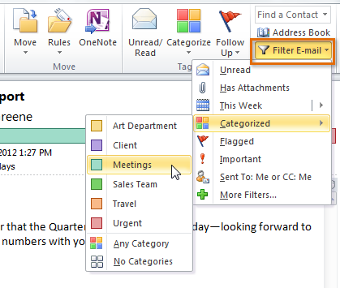
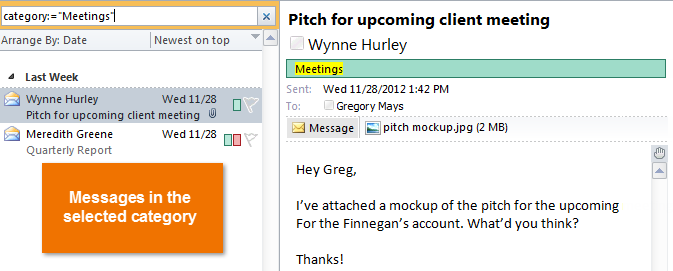
Regulile vă pot economisi mult timp executând automat comenzi precum mutarea sau ștergerea mesajelor pe măsură ce sosesc. De exemplu, dacă mutați întotdeauna e-mailurile de la o anumită persoană într-un dosar, puteți crea o regulă pentru a face acest lucru automat. Puteți crea reguli care caută un anumit expeditor, destinatar, subiect sau anumite cuvinte care sunt conținute în corpul e-mailului.
Pentru a crea o nouă regulă: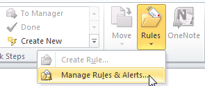
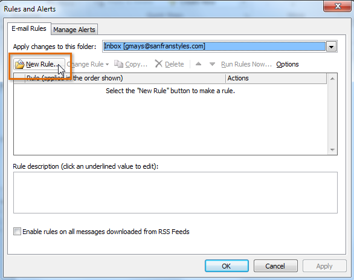
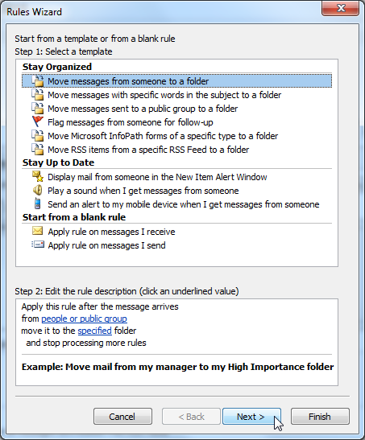
Chiar și cu dosare, categorii și reguli, poate fi dificil să țineți pasul cu fiecare mesaj pe care îl primiți. Examinați câteva dintre strategiile de mai jos pentru a afla cum să vă gestionați mai eficient mesajele.
Folosind steaguriPe măsură ce răspundeți la diferite mesaje pe parcursul zilei, unele se pot dovedi a fi mai sensibile la timp decât altele. Dacă doriți să vă asigurați că răspundeți rapid la mesajele urgente, puteți utiliza steaguri. Steaguri creează o sarcină asociată cu mesajul, care vă va solicita mementouri până când sarcina este finalizată.
Pentru a aplica un steag: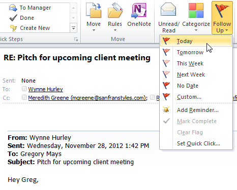
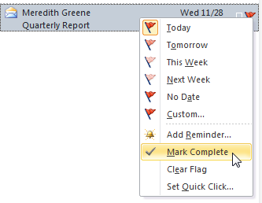
Când ștergeți mesajele din căsuța de e-mail, acestea sunt mai întâi mutate în folderul Elemente șterse, care este similar cu Coșul de reciclare de pe computer. Pentru a șterge mesajele definitiv, va trebui să goliți folderul Elemente șterse.
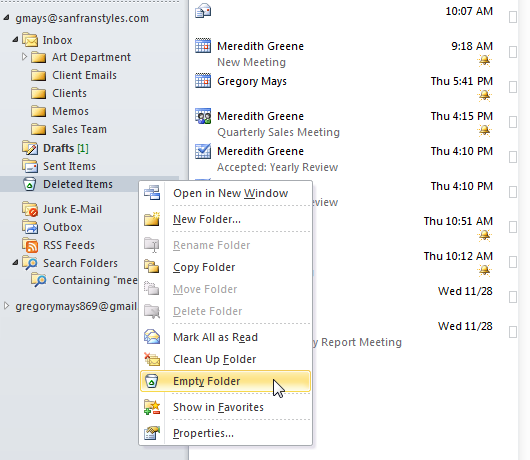
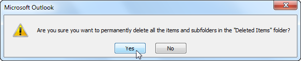
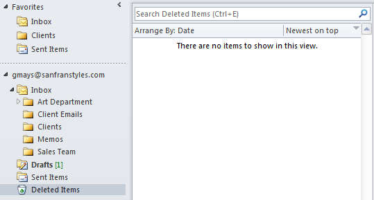